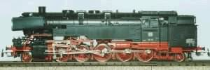
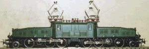
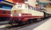
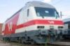
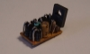
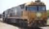
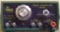
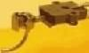

NAVIGATION
TOP of Page
HOME Page
MODEL RAILWAYS
Marklin Models
Internet Links
Buying Overseas
PROJECTS
Marklin Decoder
Marklin Finnish Sr2
Electronic Reverser
AC Conversion
DC Controller
Kadee Couplers
|
Marklin Models
|
|
 DB class 85 2-10-2 Tank Loco
|
 SBB class Ae6/8 1'C+C1'
|
|
Marklin's motto - Marklin HO - die Modelleisenbahn mit dem klaren System - (Marklin HO -
the Model Railway with the distinctive System). The trains are unique in that the most
common scale - HO - was invented by the company, and has continued with the original
theme of using a three rail pickup system with the motors being fed from alternating
current. The third rail enables trackwork to be developed without the complexity of
polarity switching in loops. Alternating current motors use field coils rather than the
permanent magnets which weaken their field strength with time.
Marklin is based in Germany as the world's largest manufacturer of model railways and has
a history stretching back to 1859. The beginnings were devoted to the manufacture of dolls
furniture by Wilhelm Marklin and his wife Caroline. Production has included model airships,
ships, steam engines, carousels, automobiles and a proprietory Meccano. The original
locomotives were primitive tinplate 'carpet runners' without track, and developed into
clockwork and steam powered models on track. Older toys have become collectors items and
have auctions with devoted followers.
TOP
HOME
Marklin Models In Three Scales:
HO (scale 1:87.1 or 3.5mm to the foot) was invented by Marklin and introduced in 1935.
This scale ratio originated from when the prototype plans were in Imperial measurement and the
scale models built in Metric. Before the second world war models were exported to Britain
painted in the big four colour schemes.
Z (scale 1:220) was invented by Marklin and introduced in 1972 with a track gauge of 6.5mm,
smaller than N scale. The smallest Z scale locomotive will fit inside a walnut shell - as proudly
demonstrated in company literature.
No1 (scale 1:32) was introduced in 1925 with electric motors, to the detriment of the
companys production of clockwork II and III gauge models.
Marklin has continued development of models with the concepts of digital multiple train control
and on board sound. The oldest digital setup was originally developed for control by a Commodore
64. A Z gauge digital system was available for two years, but proved untenable. Catalogues are now
available on CD format.
TOP
HOME
Compatible Manufacturers For The 3 Rail AC System
Other companies produce compatible models for the HO system, with a third rail pickup for the
locomotives and a special reversing chip to handle the Marklin reversing impulse. Wheelsets are
usually exchanged to obtain wheels with deeper flanges and non insulated axles.
Please Note: These web sites are mainly in German. If you use Internet Explorer, point to the
page and right click your mouse, then select 'Translate into English'. Google Chrome will do the
translation automatically. See the above section for the links.
Marklin - Built to last, but expensive. I still run my first trainset from 3 years of age -
a 1958 0-6-0 tank loco with three tinplate carriages.
Primex - The supermarket brand of Marklin. Now integrated into the mainstream Marklin catalog
as the Hobby series. Marklin with simplified detailing and lower cost.
Piko - Originally East German models, now modern European electric and diesel locos, and
German steam. Competitively priced but less detail than Marklin
HAG - Prototype electric locomotives and railcars from a small Swiss firm. Ruggedly built and
extremely reliable with slightly less detail than Marklin. Very expensive but collectable.
Roco - Accurate models of North European trains, but appear to be delicate. Locomotives are
modifications of 2 rail models. Moderately priced.
Fleischmann - Well built competitor for Marklin. Locomotives are modifications of 2 rail models.
Expensively priced.
Do It Yourself - You may be able to convert your own 2 rail loco to the Marklin system with the
inclusion of a third rail pickup shoe and a reversing mechanism. I have succeeded in operating a Lima
44 class on Marklin track with a home made reversing circuit featured on the Projects page.
TOP
HOME
Internet Links
TOP
HOME
| Australian Shops |
|
| Woodpecker |
Toongabbie, NSW. Mainly English, digital, family staff |
| Hobbyco |
Sydney, NSW. English and USA, occasional bargains |
|
Frontline Hobbies |
Newcastle. Marklin, Australian, English & USA. |
| Frey Import & Export |
Langwarrin, VIC. Marklin and European. Wide range
|
| Overseas Shops |
|
| AJCKids |
Texas, USA. Family business. Occasional bargains |
| Micro Macro Mundo Inc |
Florida, USA. Good website & prices, expensive courier |
| Reynaulds Euro-Imports |
Illinois, USA. Good website & prices, sort facilities |
| Euro Rail Hobbies |
Vancouver, BC, Canada. Good website & prices, $Can & $US |
TOP
HOME
| Manufacturers |
|
| Marklin Shop Online |
Goppingen, Germany. Compare factory prices with shop |
| Austrains |
Australian HO high quality diesels and steam locos |
| Eureka Models |
Australian HO high quality diesels, steam and railcars |
| Hornby Trains, UK |
British OO, many Great Western Railway models |
| Bachmann, UK |
British OO scale Bachmann & N scale, Liliput European |
| Marklin, USA |
Marklin Model Railways North American English site |
| HAG, Switzerland |
HAG HO DC, AC Swiss Electrics. German |
| Roco, Austria |
Roco HO. DC, AC European, detailed but fragile. German |
| Fleischmann, Germany |
Fleischmann HO. DC, some AC European. German |
| Piko, Germany |
Piko HO. DC, DCC, some AC European. German |
TOP
HOME
TOP
HOME
Buying From Overseas
Several attempts have proven fruitless at obtaining special Marklin models, due to lack of suitable local
stock and/or excessive prices. I decided to investigate purchasing from overseas. A Google search for
"Marklin Trains" immediately revealed several American and European shops. I ruled out the Europeans due
to language difficulties, although some are in English with prices in Euros and $US.
Micro Macro Mundo Inc (is this "Little Big World" in pig Latin?) in Miami, Florida turned out to have good
stock and reasonable prices. A search of the 'Electric Locomotive' listings revealed a rare NSB class EL18
(Marklin #34635) for $169.00 US. This was too good to refuse as the loco is unavaible in Australia, so I
bought the loco under their secure credit card purchase system.
Four days later I received a notification to pick up a parcel at my local Post Office. The loco arrived
securely packaged and undamaged. Apart from a requirement for lubrication, it performed beautifully.
Here is a breakdown of the costs:
| Component |
$US |
Exchange |
$AUS |
| Marklin model 34635 |
$ 169.00 |
1.3150 |
$ 222.23 |
| Handling Fee (packing & paperwork) |
$ 4.50 |
1.3150 |
$ 5.92 |
| Cost of article ex America |
$ 173.50 |
1.3150 |
$ 228.15 |
| Bank Currency Conversion Fee for Model |
|
|
$ 5.70 |
| Postage America to Australia |
$ 33.20 |
1.3035 |
$ 43.28 |
| Bank Currency Conversion Fee for Postage |
|
|
$ 1.08 |
| Total Cost from American shop |
|
|
$ 278.21 |
TOP
HOME
The shop applied a $4.50 Handling Fee, noted in the fine print on the web site,
to take the American cost to $173.50.
Note the exchange rate varied between the time of purchase and the time of postage.
Four discrete charges were applied to my credit card by the bank. They were:
1. The cost of the article ex America
2. A foreign currency conversion fee for the article - St George bank charges 2.5%
3. Postage of the article from America to Australia - note ALL postal charges are expensive.
4. A foreign currency conversion fee for the postage.
Here is worked example for an early Marklin Swiss class Re460 with CIBA logos.
The unique Australian example was located interstate, so I have added postage.
The American example is from MMM Inc.
| Component |
$US |
Exchange |
$AUS |
| Australian normal stock price |
|
|
$ 583.30 |
| Postage from Australian shop |
|
|
$ 10.00 |
| Cost from Australian shop |
|
|
$ 593.30 |
| American normal stock price |
$ 300.99 |
1.3150 |
$ 395.80 |
| Handling Fee (packing, paperwork, export form) |
$ 4.50 |
1.3150 |
$ 5.92 |
| Cost of article ex America |
$ 305.49 |
1.3150 |
$ 401.72 |
| Bank Currency Conversion Fee - Model |
|
|
$ 10.04 |
| Postage from American shop |
$ 33.20 |
1.3035 |
$ 43.28 |
| Bank Currency Conversion Fee - Postage |
|
|
$ 1.08 |
| Cost from American shop |
|
|
$ 456.12 |
| Saving by buying overseas |
|
|
$ 137.18 |
TOP
HOME
This is quite interesting when comparing the normal stock prices - the saving alone
would be enough to buy a couple of carriages.
Also note that M.M.M.Inc. currently have the loco on special at $199.99 US.
Do the maths yourself. Note that since these calculations were done, the $AUS exchange
rate sat over $US parity for six months, and made for a bonanza in overseas purchases.
Conclusion:
The local shops have good reputations, give access to warranty, service and parts plus
the occasional bargain - keep your eyes peeled to the shop web sites. Prices are on a
par with European catalog prices converted from Euros. You can also test any article
before you buy, so if possible support your local shop.
For anything slightly exotic (say a Swiss model) you may need to buy overseas, where
you might still find high prices due to the exchange rate - rework the equations for
the present exchange rate. Extortionate postage costs and the occasional fictitious
stock level may add problems. Bear this in mind should you consider buying overseas,
and do your homework by contacting the shop before purchase. Note the overseas shops
still have the same warranty conditions; merely pay for post back to the shop.
TOP
HOME
Model Railway Projects
|

|
DECODER - CONVERT MARKLIN AC LOCOS TO DIGITAL
Convert Marklin AC Locomotives to Digital using a reasonably priced four function decoder sourced from Argentina.
|
|

|
SR2 - MODEL A FINNISH RAILWAYS Sr2 ELECTRIC LOCO
Marklin produce models of the Swiss Re460 and the Norwegian EL18, but not the similar broad gauge Finnish Sr2.
This project details the conversion of a Swiss Re460 model into an Sr2.
|
|

|
ELECTRONIC - CONVERT AC LOCO TO AN ELECTRONIC REVERSER
Convert standard Marklin locomotives using a reversing relay to operation with an Electronic Reverser.
The modification allows crisp reversing without over run and much improved low speed running.
|
|

|
CONVERT - 2 RAIL DC LOCOS TO 3 RAIL AC LOCOS
Convert two rail locos to the Marklin system to enable Australian or English prototypes to run on Marklin track.
Modifications to the loco are the addition of an AC reversing circuit and mounting a pickup shoe to the leading bogie.
|
|

|
CONTROLLER - BUILD A DC CONTROLLER
This controller is cheap, easily built from Dick Smith/Jaycar components, is fully regulated to 1.2amps and short circuit proof.
|
|

|
KADEE - FITTING KADEE COUPLERS TO BRITISH ROLLING STOCK
This is sometimes a bit of a problem due to the height of the coupler mounting surfaces and the proximity of the
bogies to the end of the carriages. Here are two solutions, one for a van, the other for the bogie of a carriage.
|
TOP
HOME
|